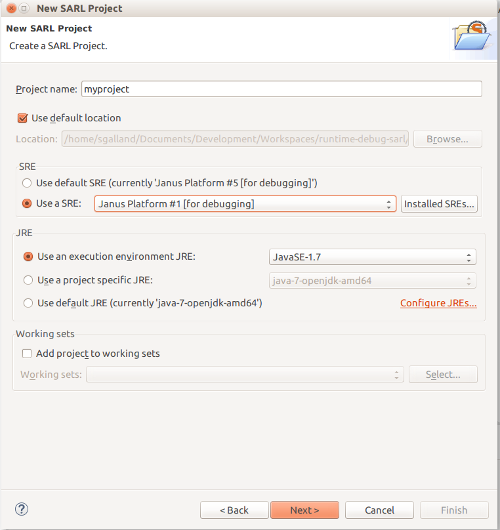
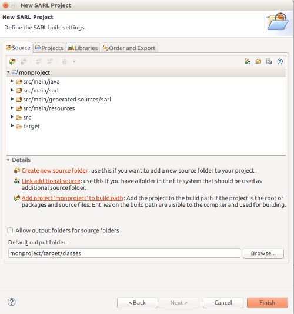

Create your First Project
- 1. Create a SARL Project without Maven
- 2. Create a SARL Project with Maven
- 3. What's next?
- 4. Legal Notice
For developing with SARL, you should create a project. This document describes two ways for created SARL projects.
Two ways are available for creating a SARL project:
- creating a SARL project inside Eclipse without Maven, or
- creating a SARL project with Maven (inside or outside Eclipse).
These two ways are explained below.
1. Create a SARL Project without Maven
For creating a project, you should open your Eclipse and click on File > New > Projects, and select SARL Project in the SARL category.

After clicking on Next, the wizard is displaying the first page for creating a SARL project.
1.1. Step 1: Entering the project information
You must enter the name of your project. You could change the standard SARL and Java environment configurations as well.

Then you could click on Next for continuing the edition of the project’s properties, or simply click on the Finish button for creating the project with the default properties.
The rest of this section is devoted to the edition of the additional properties for the SARL project.
1.2. Step 2: Configuration of the source folders”
The second page of the wizard contains the building settings. Two tabs are really interesting: the Source and the Libraries.
The Source tab defines the folders in your project that must contains source code files. By default, a SARL project is composed of four source folders:
src/main/java: for your Java classes;src/main/sarl: for your SARL scripts;src/main/generated-sources/sarl: for the Java codes generated by the SARL compiler (you should not change them yourself);src/main/resources: for the files that are not SARL nor Java code.
The default output folder is target/classes.

2. Create a SARL Project with Maven
For creating a project with both the Maven and SARL natures, you should open your Eclipse and click on File > New > Others > Maven > Maven Project.
Follow the steps of the project creation wizard, and finally click on the Finish button.
2.1. Edit the Maven configuration
Open the file pom.xml, and edit it for obtaining a content similar to the configuration below.
Replace the version number 0.11.0 of SARL with the one you want to use. You could search on the
Maven Central Repository for the last available version.
<project>
...
<properties>
...
<sarl.version>0.11.0</sarl.version>
<jdk.version>1.8</jdk.version>
<project.build.sourceEncoding>UTF-8</project.build.sourceEncoding>
</properties>
...
<build>
<plugins>
...
<plugin>
<groupId>org.apache.maven.plugins</groupId>
<artifactId>maven-compiler-plugin</artifactId>
<version>3.8.1</version>
<configuration>
<source>${jdk.version}</source>
<target>${jdk.version}</target>
<encoding>${project.build.sourceEncoding}</encoding>
</configuration>
</plugin>
<plugin>
<groupId>io.sarl.maven</groupId>
<artifactId>sarl-maven-plugin</artifactId>
<version>${sarl.version}</version>
<extensions>true</extensions>
<configuration>
<source>${jdk.version}</source>
<target>${jdk.version}</target>
<encoding>${project.build.sourceEncoding}</encoding>
</configuration>
</plugin>
</plugins>
</build>
...
<dependencies>
...
<dependency>
<groupId>io.sarl.maven</groupId>
<artifactId>io.sarl.maven.sdk</artifactId>
<version>${sarl.version}</version>
</dependency>
...
</dependencies>
...
</project>
The Maven configuration is based on the use of sarl-maven-plugin. This plugin is in charge of compiling the SARL and
the Java files. Details about the sarl-maven-plugin may be found on this page.
2.2. Configuration of a runtime environment (optional)
For executing your SARL program, a run-time environment should be used. By default, the SARL development environment replaces any reference to the SARL libraries by the run-time environment’s libraries when the SARL program is launched within the SARL environment or when a runnable Jar library is created.
In several specific cases, you may want to include the runtime environment into the Maven dependencies of your project. In this case, you could replace the Maven dependency to the SARL sdk (as defined in the previous section) by a Maven dependency to the runtime environment library.
The runtime environment that is recommended by the developers of SARL is Janus.
Replace the version number (3.0.11.0) of the Janus platform with the one you want to use.
You could search on the Maven Central Repository for the last available version.
<project>
...
<properties>
...
<janus.version>3.0.11.0</janus.version>
</properties>
...
<build>
<plugins>
...
<plugin>
<groupId>io.sarl.maven</groupId>
<artifactId>sarl-maven-plugin</artifactId>
<version>${sarl.version}</version>
<extensions>true</extensions>
<configuration>
<source>${jdk.version}</source>
<target>${jdk.version}</target>
<encoding>UTF-8</encoding>
</configuration>
</plugin>
</plugins>
</build>
...
<dependencies>
...
<dependency>
<groupId>io.janusproject</groupId>
<artifactId>io.janusproject.kernel</artifactId>
<version>${janus.version}</version>
</dependency>
...
</dependencies>
...
</project>
3. What’s next?
In the next section, we will learn how to create our first agent.
4. Legal Notice
- Specification: SARL General-purpose Agent-Oriented Programming Language (“Specification”)
- Version: 0.11
- Status: Stable Release
- Release: 2020-06-02
Copyright © 2014-2020 the original authors or authors.
Licensed under the Apache License, Version 2.0; you may not use this file except in compliance with the License. You may obtain a copy of the License.
You are free to reproduce the content of this page on copyleft websites such as Wikipedia.
Generated with the translator io.sarl.maven.docs.generator 0.11.0.